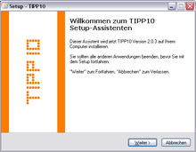
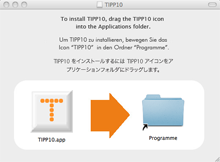

Merkmale von TIPP10 | Inhaltsverzeichnis | Ergonomie am Arbeitsplatz
Merkmale von TIPP10 | Inhaltsverzeichnis | Ergonomie am Arbeitsplatz 
3. Installation
TIPP10 können Sie kostenlos aus dem Internet herunterladen. Geben Sie dazu die Internetadresse http://www.tipp10.com in einen Browser ein, wählen anschließend unter dem Menüpunkt Download die für Ihren Computer passende Version von TIPP10 und speichern die Datei auf Ihrem Computer.
3.1 Update
Sollten Sie TIPP10 bereits besitzen, können Sie auf die aktuelle Programmversion umsteigen ohne Ihre gespeicherten Daten zu verlieren.
Installieren Sie dazu TIPP10 einfach über die existierende Version ohne sie vorher zu deinstallieren. Ihre bisherigen Daten bleiben erhalten und Ihre Datenbank wird beim ersten Programmstart auf den neuesten Stand gebracht.
Bei der portablen Windowsversion müssen Sie darauf achten, dass der Ordner portable innerhalb des TIPP10-Verzeichnisses erhalten bleibt. Sie erreichen dies, indem Sie den Ordner portable der alten Version in das Verzeichnis der neuen Version kopieren.
3.2 Installation unter Windows
TIPP10 für Windows gibt es in zwei Ausführungen. Als installierbare Version und als portable Version. Die installierbare Version besitzt eine Installationsroutine, kann also nach der Installation über das Startmenü gestartet werden und legt für jeden Windowsbenutzer eine eigene Datenbank an. Sie kann außerdem im Netzwerk verwendet werden. Die portable Version dagegen ist geeignet, um sie z.B. von einem USB-Stick zu starten. Sie muß nicht installiert werden, ist aber auch nur für einen Benutzer geeignet (da die Daten direkt im Programmverzeichnis gespeichert werden).
3.2.1 Installierbare Version
Um das Programm TIPP10 unter Windows zu installieren, starten Sie die Datei tipp10_win_2-1-0.exe indem Sie einen Doppelklick auf das Dateisymbol ausführen. Anschließend wird ein Installationsprogramm gestartet.
Zunächst können Sie die Sprache wählen, die für die Installation verwendet wird. Diese Einstellung hat keine Auswirkung auf die Sprache, die später im Programm selbst verwendet wird. Bestätigen Sie Ihre Wahl, indem Sie auf den Button OK klicken.

Nach einem Klick auf Weiter werden Sie im nächsten Schritt gebeten, die Lizenzvereinbarung zu akzeptieren. Lesen Sie sich die Vereinbarung sorgfältig durch. Erst nachdem Sie diese akzeptiert haben, können Sie die Installation mit einem Klick auf den Button Weiter fortsetzen.
Nun werden Sie aufgefordert, ein Verzeichnis anzugeben, in dem TIPP10 installiert werden soll. Im Normalfall sind hier keine Modifizierungen nötig, Sie können aber bei Bedarf ein eigenes Verzeichnis angeben oder durch Klick auf Durchsuchen direkt auswählen.
Nach einem Klick auf Weiter werden Sie gefragt, welchen Namen der Ordner in Ihrem Windows-Startmenü tragen soll. Auch hier können Sie bei Bedarf einen eigenen Namen festlegen. Anschließend können Sie die Installation über den Button Weiter fortführen.
In einem vorletzten Schritt vor dem eigentlichen Installieren der Dateien, werden Sie noch gefragt, ob eine Programmverknüpfung auf Ihrem Desktop angelegt werden soll. Wenn Sie dies wünschen, versehen Sie Desktop-Symbol über einen Mausklick mit einem Haken. Andernfalls kann das Programm nach der Installation nur über das Windows-Startmenü gestartet werden. Bestätigen Sie Ihre Wahl nun wieder mit einem Klick auf den Button Weiter.
Jetzt wird Ihnen eine Zusammenfassung der vorgenommenen Einstellungen angezeigt und Sie können das Kopieren der Dateien mit einem Klick auf den Button Installieren einleiten. Anschließend werden die Dateien extrahiert und installiert.
Eine Meldung informiert Sie zum Schluss über die erfolgreiche Installation und bietet Ihnen die Möglichkeit, das Programm direkt zu starten. Wünschen Sie dies nicht, entfernen Sie einfach den Haken bei TIPP10 starten. Beenden Sie nun die Installation mit einem Klick auf den Button Fertigstellen. Das Programm wurde nun erfolgreich installiert.
3.2.2 Portable Version
Die portable Version von TIPP10 liegt als ZIP-Archiv vor und Sie müssen diese zuerst entpacken. Normalerweise sollte es ausreichen, wenn Sie einen Doppelklick auf die Datei tipp10_win_portable_2-1-0.zip ausführen und den Extrahierungs-Schritten von Windows folgen. Sollten Sie über kein Programm zum Entpacken von ZIP-Dateien verfügen, müssen Sie erst eine geeignete Software, z.B. WinZIP oder WinRAR, installieren.
Nachdem Sie die Datei entpackt haben, sollten Sie einen Ordner tipp10_win_portable_2-1-0 vorfinden. In diesem Ordner befinden sich die eigentlichen Programmdateien und hier werden auch Ihre Ergebnisse gespeichert. Sie können den Ordner nun bei Bedarf auf ein externes Laufwerk (z.B. einen USB-Stick) verschieben und TIPP10 so von jedem Windows-PC ausführen. Um TIPP10 zu starten, navigieren Sie einfach in den Ordner tipp10_win_portable_2-1-0 und starten Sie die Datei tipp10.exe mit einem Doppelklick.
TIPP10 erstellt nach dem ersten Start eine neue Benutzerdatenbank tipp10v2.db innerhalb des Ordners, um Ihre persönlichen Ergebnisse zu speichern. Mehr Informationen zu der Speicherung der Daten finden Sie im Kapitel 2.3.
3.3 Installation unter Mac OS
Die Macintosh-Version von TIPP10 wird als Imagedatei ausgeliefert. Führen Sie einen Doppelklick auf die Datei tipp10_mac_2-1-0.dmg (eventuell sehen Sie die Endung .dmg nicht) aus, um die Lizenzvereinbarung anzuzeigen.
Lesen Sie sich die Vereinbarung sorgfältig durch. Erst nachdem Sie diese akzeptiert haben, wird das Image verbunden und es wird Ihnen das Installationsfenster angezeigt.

Ziehen Sie nun einfach mit der Maus das Icon TIPP10 in den Ordner Programme. TIPP10 ist nun installiert und befindet sich in Ihren Programmen. Sie können nun bei Bedarf das Image über den Finder auswerfen und die Imagedatei löschen. Sie benötigen diese Datei nun nicht mehr.
Um TIPP10 zu starten, öffnen Sie den Finder und wählen Sie im linken Menü Programme aus. Jetzt können Sie das Programm starten, indem Sie auf der rechten Seite das Icon TIPP10 doppelt anklicken.
Sollten Sie ohne Umwege jederzeit auf das Programm zugreifen wollen, können Sie das Icon auch mit der Maus auf Ihren Schreibtisch oder das Dock bewegen.
3.4 Installation unter Linux
Derzeit existieren Installationsanleitungen für die Linux-Distributionen Ubuntu, Kubuntu, OpenSuse und Puppy Linux. TIPP10 sollte aber auch unter anderen Linux-Systemen reibungslos laufen.
3.4.1 (K)Ubuntu Linux
Sie können TIPP10 unter (K)Ubuntu über ein fertiges Debian-Paket und den Paketmanager installieren oder manuell über die herkömmliche Weise vornehmen.
Ein aktuelles Wiki für die Installation von TIPP10 unter Ubuntu finden Sie auch im Internet unter http://wiki.ubuntuusers.de/Schreibtrainer.
Installation über den Paketmanager
Um das fertige Debian-Paket zu installieren, laden Sie die Datei tipp10_debian_2-1-0.deb von der Projektseite herunter. Anschließend können Sie auf den jeweiligen Paketmanager Ihrer Distribution zurückgreifen, um das Paket zu installieren. Unter Ubuntu ist das normalerweise gdebi, unter Kubuntu die Softwareverwaltung oder gdebi-kde. Genauere Informationen zum Installieren von Debian-Paketen finden Sie unter http://wiki.ubuntuusers.de/Paketinstallation_DEB.
Nach der Installation können Sie TIPP10 über Anwendungen - Bildung - TIPP10 aus dem Startmenü heraus starten.
Manuelle Installation
Um TIPP10 auf die manuelle Weise zu installieren, laden Sie das Archiv tipp10_linux_v2-1-0.tar.gz von der Projektseite herunter. Das Archiv enthält bereits eine fertig ausführbare Programmdatei tipp10. Der Ordnung halber sollte man mit den folgenden Befehlen den Programmordner nach /opt/ verschieben und eine Verknüpfung in /usr/local/bin/ anlegen:
sudo tar -xzf tipp10_linux_v2-1-0.tar.gz -C /opt/
sudo ln -s /opt/tipp10/tipp10 /usr/local/bin/
Das Programm kann nun über das Terminal mit folgendem Befehl gestartet werden:
tipp10
Um nun einen Starteintrag zu erstellen, erzeugen Sie mit einem Editor und mit Root-Rechten die Datei /usr/share/applications/tipp10.desktop und fügen diesen Inhalt ein:
[Desktop Entry]
Encoding=UTF-8
Name=TIPP10
Comment=Touch Typing Software
Comment[de]=10-Finger-Schreibtrainer
Exec=tipp10
Icon=/opt/tipp10/tipp10.png
Terminal=false
Type=Application
Categories=Education;
Nach dem Speichern der Datei lässt sich TIPP10 über Anwendungen - Bildung - TIPP10 aus dem Startmenü heraus starten.
3.4.2 OpenSuse
Folgende Anleitung wurde getestet mit OpenSuse 10.1.
1. Laden Sie die Datei tipp10_linux_v2-1-0.tar.gz von der Projektseite herunter.
2. Archiv entpacken. Führen Sie die folgenden Befehle in Ihrem Terminal aus:
tar -xvvzf tipp10_linux_*.tar.gz
rm tipp10_linux_*.tar.gz
ln -s /$HOME/tipp10 /$HOME/Desktop/tipp10
cd $HOME
3. Öffnen Sie auf dem Desktop den Ordner tipp10.
4. Um das Programm zu starten führen Sie die Datei tipp10 aus.
5a. Sollte TIPP10 nach dem Start den Fehler Nummer 309 melden, schliessen Sie zuerst TIPP10.
5b. Führen Sie anschließend den folgenden Befehl in Ihrem Terminal aus:
chmod u+w $HOME/tipp10/tipp10v2.db
5c. Starten Sie nun erneut TIPP10 (indem Sie die Datei tipp10 ausführen).
Vielen Dank an Steffen Götz für die Veröffentlichung dieser Anleitung!
1. Kompilierumgebung einrichten (wenn nicht schon getan)
2. glibc auf Version 2.5 updaten
3. TIPP10 entpacken
4. Datei tipp10 starten
5. Desktopverknüpfung erstellen und evtl. Menüeintrag
zu 1:
Es gibt verschiedene Möglichkeiten, Puppy-Linux zu benutzen. In erster Linie "live" (CD, USB, etc.) oder von Festplatte (minimal oder richtige Installation - hierzu wird aber bereits ein Bootloader benötigt, z.B. Grub).
Kompilierumgebung einrichten bei CD-, USB-, und mimimal Nutzung:
a) Die Datei devx_XXX.sfs downloaden (ftp://ibiblio.org/pub/linux/distributions/puppylinux/). XXX steht für die Puppy-Version (z.B. 2.17). Die Datei muß sich im gleichen Verzeichnis befinden wie die Datei pup_save_XXX.2fs!
b) Kurztest: cc auf der Konsole eingeben, die Antwort sollte "cc: no input files" lauten (evtl. einen Reboot durchführen).
Bei der richtigen Festplattenistallation ist die Einrichtung der Kompilierumgebung etwas komplizierter. Da es hier um TIPP10 geht, wird dieser Vorgang nicht mehr genauer erläutert, im Internet finden sich dazu aber weitere Informationen.
zu 2:
Klick auf install (Desktop), Klick auf PETget (und nochmal), glibc-2.5 auswählen und den Anweisungen folgen (thank you Barry&Co). Die Installation dieser call-library ermöglicht die Installation vieler Programme unter Puppy, da sie etwas moderner ist (nptl).
zu 3:
tipp10v2_linux_v2-1-0.tar.gz in einem geeigneten Verzeichnis ablegen (z.B. /root/my-applicatios) und entpacken (draufklicken). Siehe dazu auch die Anleitung für die Installation unter OpenSuse im Kapitel 3.3.1.
zu 4:
In das Verzeichnis tipp10 wechseln und auf die Datei tipp10 klicken. Voila!? Ansonsten eine Konsole öffnen (Rechtsklick, window, terminal here) und ./tipp10 eingeben.
zu 5:
Abschließend kann man die Datei auch noch auf den Desktop ziehen und mit einem entsprechendem Icon versehen (Kontextmenü). Für den Eintrag in das Menü (/root/.jwmrc) siehe Puppy-Linux Dokumentation.
 Merkmale von TIPP10 | Inhaltsverzeichnis | Ergonomie am Arbeitsplatz
Merkmale von TIPP10 | Inhaltsverzeichnis | Ergonomie am Arbeitsplatz 
© 2006-2011 Tom Thielicke IT Solutions